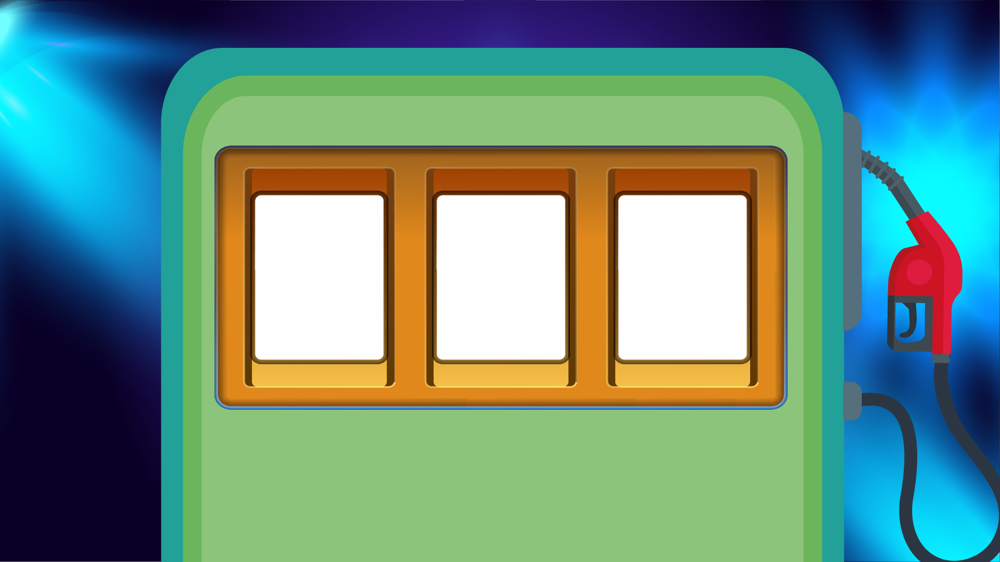

<main class="h-screen flex flex-col items-center justify-center relative">
  <div class="absolute inset-0 z-0">
    
  </div>
  <section class="w-full flex items-center justify-center gap-6 z-10 relative mb-20" style="height: 47%">
    <app-reel
      class="flex items-center justify-center h-2/3 w-1/6 relative overflow-hidden"
      *ngFor="let symbol of randomSymbols; let i = index"
      [duration]="getDuration(i)"
      [targetSymbol]="targetSymbol"
      (stop)="onReelStop(i)"
      [ngStyle]="getSlotStyle(i)"
    ></app-reel>
  </section>

  <button
    (click)="generateRandomSymbols()"
    type="button"
    [disabled]="spinning.includes(true)"
    class="text-white bg-gradient-to-r from-green-400 via-green-500 to-green-600 hover:bg-gradient-to-br font-medium rounded-lg px-5 py-2.5 text-center me-2 w-40 text-4xl z-10">
    Girar
  </button>
</main>

<audio id="audio_back" controls hidden>
  <source type="audio/mpeg" src="../../../assets/music/back.mp3">
</audio>
<audio id="audio_win" controls hidden>
  <source type="audio/mpeg" src="../../../assets/music/win.mp3">
  <source type="audio/mpeg" src="../../../assets/music/applause-180037.mp3">
</audio>
<router-outlet></router-outlet>
